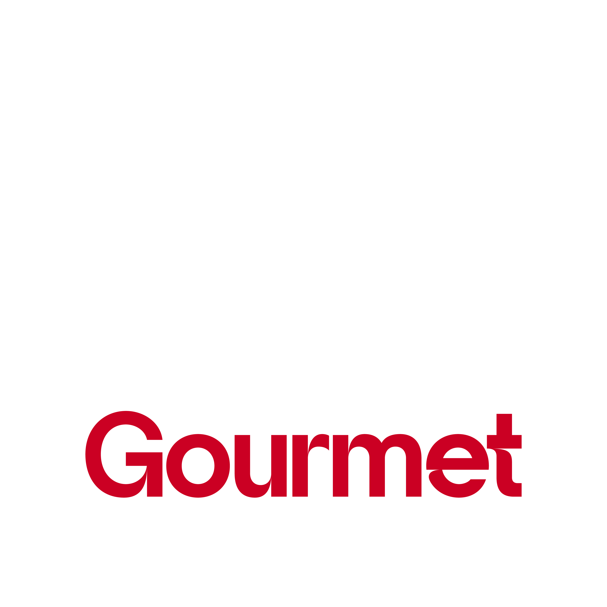

Casa Bom Gourmet
O hub B2B e de inovação do ecossistema — e sede oficial do FoodCo Experience. Um endereço em Curitiba onde gastronomia, design, negócios e lifestyle se encontram.
Um espaço que vira experiência
A casa do ecossistema Bom Gourmet
Mais do que um espaço para eventos, a Casa é o hub B2B e de inovação do Bom Gourmet — sede do FoodCo Experience e ponto de encontro de marcas, operadores e público qualificado.
Jantares, lançamentos, ativações, gravações e experiências sob medida ganham vida aqui, integrando gastronomia, design, negócios e lifestyle.
Conheça a Casa por dentro
Um espaço, muitas possibilidades
Eventos & jantares
Experiências gastronômicas autorais para públicos selecionados.
Ativações de marca
Lançamentos e ações imersivas com a assinatura do Bom Gourmet.
Conteúdo & gravações
Cenário pronto para produções, reels e captações da marca.
A Casa em fotos
Realize a sua experiência na Casa Bom Gourmet
Fale com nosso time e descubra como usar o espaço para a sua marca ou evento.